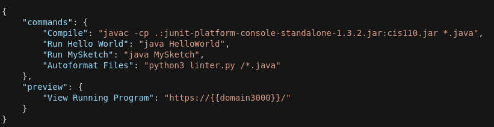

Click the blue pencil in the top right to edit assignments.
Unless it’s a brand new assignment, you can copy the assignment from a previous semester. Do this by Add Assignment > Existing and then navigate to the previous semester’s version.
If you’re setting up a brand new assignment, go to Add Assignment > Project Based. In Step 1, click to see more options > browse > University of Pennsylvania SEAS / CIS 110 Java Stack. Fill in the name field, and leave the memory as standard. Click Create.
If you just want to edit an existing assignment, click the name of it.
Once the assignment has been created, confirm the following configurations are correct.

tab_size = 4
ruler = 85
The compile command we use doesn’t work for JUnit files, so in the config we have to change it to be actual files instead of all java files. For instance, if I wanted to compile FingerExercises.java and Sierpinski.java, the command would be javac -cp .:cis110.jar FingerExercises.java Sierpinski.java.
Now, for the actual JUnit configurations, navigate to the JUnit tool through Tools -> JUnit. In this pane you can switch between JUnit Settings and JUnit Executions at the top. Settings is where you’ll change the settings, and executions is where you’ll see the test output.
On the JUnit Settings, type cis110.jar into Library path. In Add Test Case, type the name of one of the test files, click Add Test Case, and then continue that for any other test files. Keep in mind that this will throw errors if you enter a file that has no test cases in it, so if it’s a file that students will be filling out, add a test case similar to the one below to get around that issue.
public static void dummyTest() {
assertTrue(true);
}
Once you’ve made the changes you need to make, go back to the main list of assignments and click Publish, enter your changes in the changelog, and click Publish. This pushes your changes to everyone else, it does not release the homework.
Leave edit mode (click the blue pencil in the top right) and click the lock next to the name of the assignment. Unlocked means available to students, locked means not available to students.